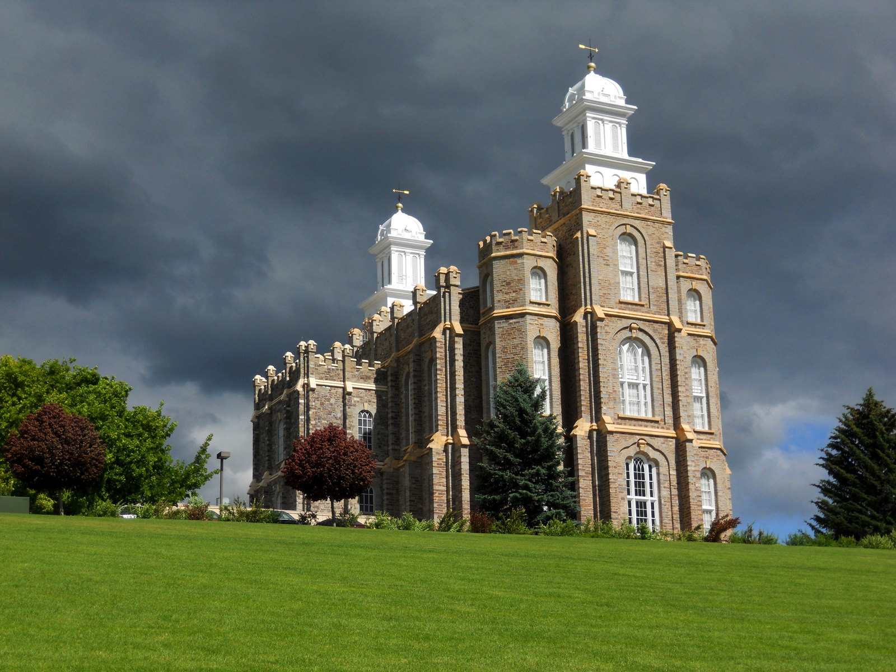
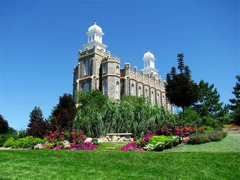

Temple Album
☰
Home
Old
New
Large
Small
My Favorite Temples

Logan Utah Temple
Provo City Center Temple

Provo City Center Temple
Provo City Center Temple
Provo City Center Temple
Provo City Center Temple
Provo City Center Temple
Provo City Center Temple
Provo City Center Temple